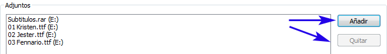
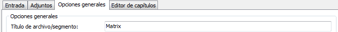
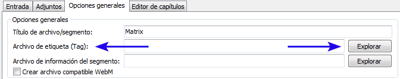

Cues: Los cues son para Matroska lo que
el índice es para los archivos AVI. Contienen los vínculos a los fotogramas
claves (key frames). Por lo general, esta opción debería dejarse en el
valor 'por defecto'. Mkvmerge elegirá automáticamente el mejor método
para cualquier tipo de pista. Una completa explicación de las pistas puede
ser encontrada en la documentación de mkvmerge
Compresión: Matroska posee una poderosa característica
para comprimir pistas mediante algoritmos de compresión sin pérdidas
(lossless). Estas compresiones pueden ser aplicadas a cualquier pista,
pero algunos reproductores sólo son compatibles con pistas VobSub. Aquí es
donde es más útil. Otras pistas, especialmente las de audio y video, ya están
comprimidas por lo que una compresión adicional no proporcionará ningún resultado.
Para archivos VobSubs, puede aprovecharse de una ganancia adicional de un 30%,
si habilita la compresión zlib. Esto es porque es por defecto para las
pistas VobSub.
Debería dejar este ajuste en por defecto.
Opciones definidas de usuario: Este campo puede ser
utilizado libremente por el usuario, para definir las opciones adicionales
de esta pista.
3.4. Adjuntos
Los archivos Matroska también contienen otros archivos, llamados adjuntos. Funciona básicamente como lo hace tu programa favorito de correo electrónico. La idea es proporcionar información adicional sobre el archivo. Algunos ejemplos podrían ser: la carátula de un CD, información adicional de la película (en formato de texto) o incluso fuentes para subtítulos.
Cada adjunto necesita dos cosas: el nombre (obviamente) y el tipo MIME que debería estar asociado al archivo. El uso es muy fácil y similar a añadir archivos en la pestaña de entrada.

Figura 9: Añade y elimina los adjuntos con estos
botones.
En la segunda pestaña de la GUI (adjuntos), puede añadir un archivo con el botón Añadir y eliminar el adjunto seleccionado con el botón Quitar. Una vez que un adjunto ha sido seleccionado, el resto de controles estarán disponibles. Puede tener que seleccionar el tipo MIME para cada adjunto, pero la descripción es opcional - aunque es una buena idea usarlo. De esta manera es más facil identificar lo que hayas adjuntado al archivo Matroska.
Figura 10: Opciones típicas para un adjunto
La última opción, estilo del archivo adjunto,
sólo se toma en cuenta si divides el archivo creado en varias partes. (La división está
explicada en la siguiente sección). Si la opción Para todos los archivos
está seleccionada, entonces el archivo actual será adjuntado a todos los archivos creados.
Si la opción Sólo en el primero está seleccionado, entonces el archivo
sólo es adjuntado al primer archivo de salida creado.
3.5. Opciones generales
En la tercera pestaña, Opciones generales, es un paquete de opciones que se aplican al archivo completo y no sólo a una o más pistas.
3.5.1. Título de archivo/segmento

Figura 11: Selecciona un título para la película
Título de archivo/segmento: Este título es usado para el título actual
de la película, p.e. 'Matrix'.
3.5.2. División automática y vinculación de archivos
La sección División maneja como el archivo
generado, es partido en diversos archivos más pequeños. Si ninguna división está
seleccionada entonces se genera un único archivo. Si la división está habilitada
entonces le dices a mkvmerge que inicie la creación de un nuevo archivo de
salida cuando alcance cierta cantidad de información escrita o después de que haya
alcanzado un específico código de tiempo. Los formatos admitidos son:
- Por el tamaño: Un número opcionalmente seguido por la letra 'K', 'M' o 'G' indicando kilobytes (1024 bytes), megabytes (1024 * 1024 bytes) o gigabytes (1024 * 1024 * 1024 bytes). Ejemplos: '700M' o '100000K'.
- Por el tiempo: El formato es
HH:MM:SS.nnncon hasta nueve digitos para una precisión de nanosegundos o un número seguido por la letra 's', indicando un número de segundos en específico. Diversos códigos de tiempo pueden ser introducidos, separados por comas.
Tenga en cuenta que los códigos de tiempo se refieren a una secuencia de salida sin dividir. Por lo tanto, introduciendo '00:10:00,00:20:00' obtendrá tres archivos, de los cuales los dos primeros tendrán una duración de diez minutos. La tercera parte contendrá el resto del archivo de entrada. Esto es independiente de la característica 'Archivos vinculados'.
Ejemplos: '01:20:00' (divide después de 1 hora, 20 minutos) o '1800s' (divide después de 1800 segundos = 30 minutos).
Figura 12: Opciones típicas para el corte. Crea archivos de 30 minutos de duración
No vincular: Esta opción controla cómo mkvmerge manejará
la división. Una pequeña explicación sobre esta característica:
Matroska admite la vinculación de archivos. Simplemente, consiste en decirle que archivo en específico, es el anterior y posterior; con respecto al actual. Para ser precisos, no son los archivos los que están vinculados sino los segmentos de Matroska. Como la mayoría de archivos únicamente contendrán un segmento Matroska, yo simplemente digo 'Archivo vinculado' aunque 'Segmento vinculado' sería más apropiado.
Cada segmento está identificado por un código UID de 128 bits de extensión. Este UID es generado automáticamente por mkvmerge. La vinculación se realiza insertando el código UID del segmento anterior y posterior, en la información del encabezado del segmento. Mkvinfo imprime estos UIDs si los encuentra.
Si una archivo es dividido en partes más pequeñas, y a continuación, usamos
la vinculación de archivos; entonces los códigos de tiempo no comenzarán desde cero, ya que
continuarán donde lo dejo en el último archivo. De esta manera el tiempo absoluto se mantiene igual,
por si los archivos previos no están disponibles (p.e. cuando los compartimos). Si no se usa
la vinculación, los códigos de tiempo comenzarán desde cero, para cada archivo. Por defecto,
mkvmerge no usa la vinculación de archivos porque la mayoría de reproductores aun no
manejan los archivos vinculados de la manera correcta. Si desea vincular archivos, habilite la casilla
de verificación Archivos vinculados.
Nota: El UID del segmento, es un IDentificador Único para cada segmento.
3.5.3. Vinculación manual de archivos/segmentos
Independientemente de que la división esté activa o no, el usuario puede decirle a
mkvmerge que vincule los archivos creados, a unos específicos UIDs.
Esto se hace insertando un UID del segmento válido, en las ventanas de texto:
UID del segmento anterior y UID del segmento siguiente.
Estas opciones aceptan un UID del segmento, en el formato que mkvinfo genera:
16 números hexadecimales, entre 0x00 y 0xff con el prefijo '0x' y separados con espacios,
p.e. 0x41 0xda 0x73 0x66 0xd9 0xcf 0xb2 0x1e 0xae 0x78 0xeb 0xb4 0x5e 0xca 0xb3
0x93. Una alternativa más simple es usar: 16 números hexadecimales entre
0x00 y 0xff, sin el prefijo '0x' y sin espacios; p.e. 41da7366d9cfb21eae78ebb45ecab393.

Figura 13: Opciones típicas para enlazar segmentos.
Si se usa la división, entonces el primer archivo es vinculado al
UID que se ha insertado en la caja de texto: UID del segmento anterior; y el último
se vincula con el UID de la caja de texto: UID del segmento siguiente.
Si no se usa la división, el archivo de salida estará vinculado a cada uno de los dos UIDs.
3.5.4. Capítulos
Figura 14: Opciones típicas del archivo de capítulos
Con el botón del explorador puedes seleccionar los capítulos que se añadirán al archivo creado. Una completa explicación de todos los aspectos que conciernen a los capítulos los puede encontrar en la sección del editor de capítulos.
3.5.5. Etiquetas globales

Figura 15: Cargamos un archivo etiqueta, que tiene un formato específico escrito en XML.
A diferencia de la etiquetas que se pueden asignar a cada pista (en la pestaña de entrada), aquí las etiquetas deben contener las UIDs de la pista. Estas etiquetas no se asignan a ninguna pista. En el 99% de los casos, esta NO es la opción que necesita!
Puede encontrar una explicación más extensa en la documentacion de mkvmerge.
3.6. Iniciando el proceso de creación
Una vez que todo se ha configurado, el proceso de creación puede iniciarse.
La última cosa que debe hacer, es seleccionar la carpeta donde se creará el archivo. Con el botón
del explorador, puede elegir el nombre del archivo de salida. Después de hacer
esto, puede comenzar el proceso apretando el botón de Iniciar multiplexado o
seleccionando la misma acción, desde la barra de menu, en la pestaña de multiplexado.
Si todo se ha configurado correctamente, mmg mostrará el cuadro de diálogo del multiplexado. En la parte superior se muestra el progreso, al igual que una descripción general de lo que mkvmerge está haciendo en ese momento.
Figura 16: La ventana del multiplexado
mkvmerge clasifica sus mensajes según tres 'niveles de gravedad': infome de estado, advertencias y errores. Todos los mensajes del informe de estado se muestran el la ventana superior. Estos incluyen los tipos de pista y otras cosas interesantes.
Las advertencias se muestran en la ventana de enmedio. mkvmerge no cancelará el proceso cuando ocurra una advertencias, pero podría no multiplexar la pista que esté relacionada con la advertencia detectada. Preste atención a todos los mensajes de advertencias.
Los errores se muestran en la ventana inferior. Son siempre estados críticos y mkvmerge finalizará el proceso después de mostrar el mensaje de error. Ese mensaje podría indicar que el disco duro está lleno, que el archivo fuente está dañado o que no puede seguir procesando.
El botón de Cancelar envia a mkvmerge una señal para finalizar
el proceso, que debería acabar inmediatamente al pulsarlo; a menos que mkvmerge esté en un bucle. Con el
botón de Guardar informe, obtendrá un registro completo de lo que mkvmerge ha realizado, para
su análisis o para remitirme el informe, en el caso de que haya encontrado un fallo en el programa.
3.7. Guardar y cargar ajustes
Todos sus ajustes personalizados no tienen porque perderse al salir del programa.
Puede guardar todos sus ajustes en archivos de textos, con la opción Guardar ajustes en el menu
Archivo; y tambien restaurar dichos ajustes con la opción Cargar ajustes. La extensión
por defecto es .mmg y es usada por otros programas. Puede asociar la extensión con mmg, para que
cargue automáticamente los ajustes definidos en el archivo.
3.8. Poner en cola varios trabajos (Procesamiento por lotes)
En el caso de que desee procesar varios archivos, no tiene que preparar el primer archivo, esperar a que finalice para preparar el segundo, y esperar a que éste finalice, etc... Mkvmerge GUI posee una gestor de archivos que almacena los trabajos a realizar en una lista, y los ejecuta a conveniencia del usuario. Los pasos básicos para utilizar el gestor de trabajos, son:
- Añada todos lo archivos, ajuste las opciones y elija el nombre de salida.
- Aprete el botón
Añadir a la lista de tarease introduzca un título para ese trabajo. - Repita el proceso tantas veces como lo necesite.
- Abra el gestor de trabajos seleccionando la opción
Gestionar trabajosdesde el menu deMultiplexado. - Aprete el botón de
Iniciar. - Vaya a tomarse algo, a comprar o hablar con tu pareja ;)
Figura 17: Gestor de trabajos
Cada trabajo tiene seis atributos: un ID que es elegido automaticamente por
mkvmerge GUI; su estado (pendiente - no ha sido multiplexado aún, hecho - multiplexado correctamente,
hecho con advertencias - multiplexado satisfactoriamente con advertencias, fallido - el proceso falló);
el nombre que introdujo antes; la hora y fecha en que el trabajo fue añadido a la lista;
la hora y fecha del inicio del multiplexado; la hora y fecha de la finalización del trabajo.
Los controles generales están situados en la parte inferior. El botón Iniciar
comenzará el proceso de multiplexado para todos los trabajos añadidos en la lista del gestor y cuyo estado sea
pendiente. El botón de Iniciar selección comenzará el proceso de multiplexado
para todos los procesos que hayan sido seleccionados indepedientemente de sus estados.
Los botones de la derecha manipulan los trabajos seleccionados. Los botones
Subir y Bajar, mueven los trabajos seleccionados por la lista. El botón Rehabilitar
cambia el estado de los trabajos a pendiente por lo que se realizarán la próxima vez que el botón Iniciar
es apretado. El botón Deshabilitar ajusta el estado a hecho.
Mientras los trabajos se ejecutan, mkvmerge no mostrará el proceso pero si lo guarda.
Si quieres ver el informe del multiplexado puedes apretar el botón Ver informe. Esto es útil si un trabajo ha finalizado
con advertencias o si ha fallado.
4. El editor de capítulos
Una de las nuevas características de mmg es un total editor de capítulos.
Puede leer texto con la sintaxis de los archivos de capítulos, importarlos desde archivos matroska y crear los archivos de
capítulos que pueden ser seleccionados en la pestaña de Opciones generales para insertarlos en los archivos Matroska
4.1. El concepto de los capítulos en Matroska
A diferencia de otros sistemas Matroska, es compatible con capítulos anidados. Esto significa que puedes definir subcapitulos en los capítulos definidos.
Un capítulo tiene al menos cuatro campos: El UID de la pista(s) que se aplica al título/nombre del capítulo, el tiempo de inicio y el lenguaje asociado. Los demás elementos son opcionales, como añadir el tiempo de finalización, más códigos de lenguaje y del país. Por lo general, el usuario sólo necesita los campos obligatorios. De estos sólo puede especificar el nombre, el tiempo de inicio y el código del lenguaje. Mkvmerge asignará automáticamente todos los capítulos para completar el archivo.
4.2. Ejemplos
El primer ejemplo es el más simple. La película en cuestión contiene cuatro partes: La introducción inicial, el primer acto, el segundo acto, y los créditos. Acuerdese que los tiempos de finalización son opcionales.
Intro (desde 00:00:00, idioma Alemán)
Acto 1 (desde 00:01:00, idioma Alemán)
Acto 2 (desde 00:05:30, idioma Alemán)
Créditos (desde 00:12:20 hasta 00;12:55, idioma Alemán)
Un ejemplo mas complicado, incluyen subcapítulos. Tomemos como ejemplo, la ópera de Ludwig van Beethoven, Fidelio. Para resumir, sólo incluyo las tres primeras piezas de los dos actos.
El primer acto contiene:
- Obertura (6:24 de duración),
- Aria: 'Ahora, querida, estamos solos' (4:46 de duración) u
- Diálogo: 'Pobre Jaquino' (0:10 de duración).
El segundo acto contiene:
- Obertura y Aria: '¡Dios! ¡Qué oscuro aquí!' (10:46 de duración),
- Melodrama y Dueto: 'Qué frío hace en esta cámara subterránea' (5:21 de duración) and
- Diálogo: '¡Se despierta!' (0:59 de duración).
El primer acto, que será nuestro primer capítulo, tiene una longitud de 11:20 minutos. Nuestro segundo acto tiene una longitud de 17:06. Estos capítulos se parecerían a esto:
Primer acto (desde 00:00:00 hasta 00:11:20, idioma Alemán,
país Alemania)
Obertura (desde 00:00:00 hasta 00:06:24, idioma
Alemán, país Alemania)
Aria: 'Ahora, querida, estamos solos'
(desde 00:06:24 hasta 00:11:10, idioma Alemán, país Alemania)
Diálogo: 'Pobre Jaquino' (desde 00:11:10 hasta 00:11:20,
idioma Alemán, país Alemania)
Segundo acto (from 00:11:20 until 00:28:26, idioma Alemán,
país Alemania)
Obertura y Aria: '¡Dios! ¡Qué oscuro aquí!'
(desde 00:11:20 hasta 00:22:06, idioma Alemán, país Alemania)
Melodrama y Dueto: 'Qué frío hace en esta cámara subterránea' (desde 00:22:06
hasta 00:27:27, idioma Alemán, país Alemania)
Diálogo: '¡Se despierta!' (desde 00:27:27 hasta 00:28:26,
idioma Alemán, país Alemania)
4.3. Formatos admitidos por mkvmerge para los archivos de capítulos
El editor de capítulos de mkvmerge y mmg, admiten diferentes formatos para los archivos de capítulos.
4.3.1. Archivos de capítulos de estilo simple/OGM.
Uno de los formatos más básicos es el utilizado en los archivos de OGM. Es un formato basado en texto. Cada capítulo está formado por dos líneas, la primera contiene el tiempo de inicio, y la segunda el nombre/título. Todas las líneas están numeradas.
El primer ejemplo puede escribirse de esta forma:
CHAPTER01=00:00:00.000
CHAPTER01NAME=Intro
CHAPTER02=00:01:00.000
CHAPTER02NAME=Act 1
CHAPTER03=00:05:30.000
CHAPTER03NAME=Act 2
CHAPTER04=00:12:20.000
CHAPTER04NAME=Credits
El segundo ejemplo no puede ser expresado de esa manera, ya que no es compatible con las especificaciones del idioma, ni con el tiempo de finalización ni con los capítulos anidados. La ventaja de este tipo de archivos es que son muy fáciles de crear, y hay varias herramientas disponibles para Windows y Unix/Linux, que crean este tipo de archivos directamente desde DVDs.
Debido a sus limitaciones, mmg no puede generar capítulos en este formato.
4.3.2. Archivos de capítulos con todas las características XML
He creado un formato de capítulos basado en XML, que ajusta con el sistema que usa Matroska. Con este formato, usted tiene un control total de las funciones. En esta guía, no describiré este formato, en detalle. Por favor, eche un vistazo los archivos de ejemplo, que vienen con mkvtoolnix.
4.3.3. Capítulos encontrados en archivos Matroska
El editor puede leer los capítulos directamente de los archivos Matroska. Estos pueden ser editados/exportados en formato XML, adjuntados al mismo archivo matroska o a otro de nueva creación. Todas las funciones son compatibles.
4.4. Crear archivos de capítulos
El editor de capítulos consta de tres partes: la vista del esquema de los capítulos, los cuatro botones usados para añadir/eliminar los registros de cada capítulo, y las cajas de texto que son usados para ajustar la información de cada registro.
Figura 18: El editor de capítulos, que muestra el ejemplo anterior
En los archivos Matroska, cada registro de los capítulos están definidos por un tiempo de inicio, un nombre y un idioma que está asociado a ese nombre. Puede tener diversos nombres para cada registro y cada uno asociado con un idioma diferente. También puede agregar el tiempo de finalización pero no es obligatorio.
Puede crear un nuevo archivo de capítulos seleccionando la opción Nuevo del menu
Editor de capítulos. Puede añadir un nuevo registro con los botones Añadir capítulo o
Añadir subcapítulo. La diferencia entre ambos, es que el botón Añadir capítulo, agrega
un nuevo registro al mismo nivel del capítulo seleccionado, y Añadir subcapítulo inserta un nuevo
registro en un nivel inferior del capítulo seleccionado.
El botón Eliminar capítulo ha de ser usado con cuidado. Elimina el esquema entero sin
preguntar confirmación, y no existe aún la opción de deshacer cambios.
Después de seleccionar un registro, puede cambiar su información. El formato para el tiempo de inicio y
finalización es HH:MM:SS.mmm o simplemente HH:MM:SS. Un nombre para el capítulo, ya habrá sido añadido.
Puede editarlo y seleccionar el idioma que tendrá este nombre. De esta manera, podría proporcionar nombres en diferentes idiomas,
p.e. 'The hero arrives' con 'eng' como idioma, y 'Der Held kommt an' con 'ger'. Aprete el botón Añadir nombre si necesita
mas registros y Eliminar nombre para suprimir el que no desee.
La creación de muchos capítulos editando el idioma, puede ser demasiado engorroso. Por lo tanto,
puede seleccionar que idioma y país, mmg debe añadir por defecto. Puede editar los valores, en Archivo --> Opciones -->
Opciones del capítulo. El botón Establecer valores hace algo similar. Con éste, puedes aplicar
un idioma y/o país, al registro del capítulo seleccionado y todos sus subregistros.
Los archivos de capítulos pueden guardarse en formato XML con los botones Guardar o
Guardar como. Guardar como no se puede usar para escribir los capítulos en el archivo Matroska abierto - para eso
tendrás que usar Guardar como Archivo Matroska.
4.5. Editar los capítulos existentes
Puede cargar archivos de capítulos .XML o de archivos Matroska, seleccionando la opción
Cargar del menu. mmg detectará automaticamente el tipo de archivos usado y leerá los capítulos.
5. El editor de encabezado
mmg cuenta con un editor de encabezados para los archivos Matroska. Puede iniciarlo desde el menu "Archivo" --> "Editor de encabezado".
El editor de encabezado permite al usuario editar la información de algunos campos de los encabezados de segmentos y pistas, sin tener que volver a multiplexar el archivo. Su uso es simple, carga un archivo, selecciona el campo del encabezado que quieres cambiar, modifica el valor por el que desees y guarda el archivo.
Figura 19: El editor de encabezado
5.1. Añadir y eliminar campos del encabezado
El formato de los archivos Matroska, permite que estén presentes o ausentes, la mayoría de los campos del encabezado. El editor de encabezado de mmg, mostrará todos los campos del encabezado que soporta, incluso si actualmente no están presentes en el archivo. Esto permite al usuario, añadir campos que no están presentes, y eliminar los campos que si lo están.
5.2. Abrir un archivo existente
El usuario puede iniciar la edición de un archivo eligiendo "Abrir" desde el menu "Archivo", del editor del encabezado. Tras seleccionar el archivo apropiado, el editor del encabezado escaneará el archivo para todos los elementos importantes. Esto puede tomar algo de tiempo, dependiendo del tamaño del archivo. Esto es necesario debido la flexible estructura de los archivos Matroska.
5.3. Editar campos del encabezado
Después de abrir el archivo, en la izquierda del panel, se mostrará un registro para los encabezados del segmento y un registro para cada pista que se encontró en el archivo. Cada uno contiene un numero de subelementos que representan los valores actuales del encabezado. Cuando el usuario selecciona un subelemento, el panel derecho se actualiza mostrando una serie de campos:
- su tipo (un número, una cadena de texto, etc),
- su nombre,
- una breve descripción de su contenido,
- si el elemento realmente está presente en el archivo, incluyendo una opción para quitarlo si está o añadirlo si no lo está,
- si el valor original del elemento estaba presente cuando el archivo fue abierto y
- un elemento de control para modificar su contenido.
La mayoría de los tipos de valor son evidentes: números, cadenas de texto, etc. Sin embargo, el tipo binario se muestra como una secuencia de digitos hexadecimales. Los formatos aceptados, son los mismos que los empleados en varias opciones de mkvmerge, para especificar los UIDs del segmento: ya sea una simple secuencia de dígitos hexadecimales (p.e. 1857a7fe7d ...) o los números hexadecimales con el prefijo "0x" antes de cada par (p.e. 0x18 0x57 0xa7 0xfe 0x7d ...).
5.4. Validación
El usuario puede validar los cambios seleccionando "Validar" del menu "Encabezados". La validación también se ejecuta, de forma automática, cada vez que el usuario quiere guardar los archivos. La validación asegura que los valores que el usuario ha suministrado, pueden ser almacenados en el elemento. Por ejemplo, un elemento de tipo número no puede contener caracteres.
Si la validación falla, el editor muestra una ventana advirtiéndonos del fallo. El panel de la derecha se actualiza, mostrando el primer elemento erróneo, para que se corrija.
5.5. Guardando el archivo
El usuario puede guardar los cambios al seleccionar "Guardar" del menú "Archivo". Si nungún cambio se ha hecho, entonces mmg lo advertirá y por lo tanto no modificará el archivo.
Antes de modificar el archivo, mmg comprueba si el archivo ha sido modificado por otra aplicación desde que ha sido abierto. Si este es el caso, entonces mmg advertirá al usuario, descarta todos los cambios y vuelve a cargar el archivo a fin de garantizar que el archivo no está dañado.
Mmg se esfuerza en encontrar los lugares apropiados para escribir los encabezados modificados. Sobreescribirá los elementos del encabezado existentes a su posición original, los elementos EbmlVoid y todas las demás instancias de los encabezados que encuentre. También actualizará los encabezados meta seek para que los encabezados pueden ser encontrados fácilmente por las aplicaciones de lectura de ese archivo.
Tras guardar el archivo, el editor de encabezado, le volverá a cargar y lo analizará. Esto se hace para asegurar que no se crea un archivo corrupto. Este proceso provoca un considerable descenso en la velocidad, por lo que será eliminado en futuras revisiones de mmg, cuando se hayan hecho las suficientes pruebas.